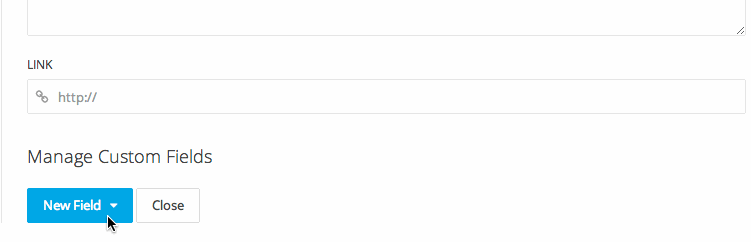

A simple, yet powerful Widgetkit 2 feature are the Custom Fields that allow Widgetkit to be used as a simple CCK (Content Construction Kit).
When creating New Content, the bottom of the dialog will show the Manage Fields button. Click the button to switch the view to the fields editing mode. Notice that you can reorder the fields by drag and dropping them while in editing mode.
| Field | Description |
|---|---|
| Displays an Email button. | |
| Displays a Facebook button. | |
| Google Plus | Displays a Google+ button. |
| Displays a Twitter button. |
Currently these fields are used by Grid, Grid-Stack, Map and Switcher Widget Plugins.
NOTE Social Media buttons will be displayed in the media overlay if set as Social Buttons.
| Field | Description |
|---|---|
| Tags | Currently this field is not used by any Widget Plugin. |
| Location | Allows to pick a location from a Google Map. Currently used by the Map Widget Plugin. |
| Custom | This field type are ment to be used with your own custom Widget Plugins. The currently supported types are Text, Textarea, Tags, Boolean, Media and Location |